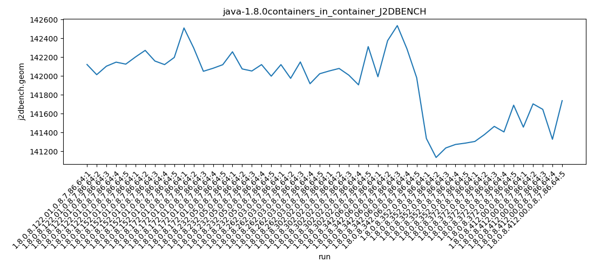
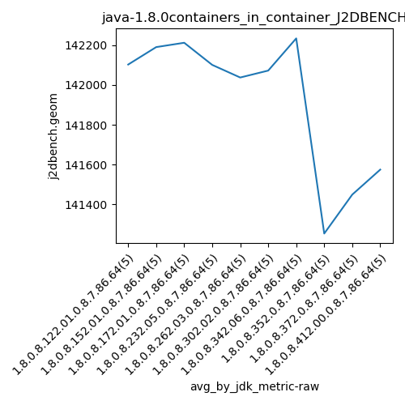
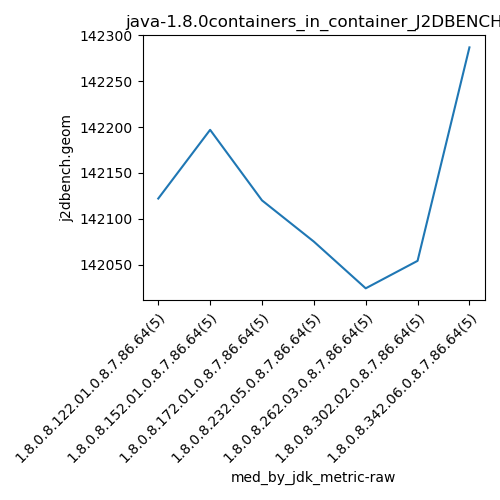
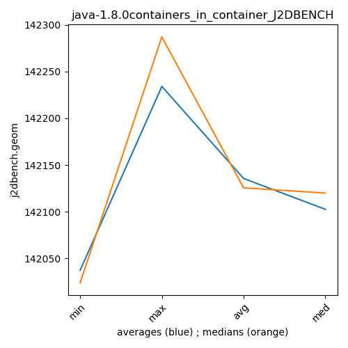

java-1.8.0 J2DBENCH
Context at bottom
/home/jvanek/git/benchmarks-in-nested-virtualisation-toolchain/final_results/containers_in_container_results/containers_in_container_DACAPO
java-1.8.0
J2DBENCH
/home/jvanek/git/benchmarks-in-nested-virtualisation-toolchain/final_results/containers_in_container_results/containers_in_container_JMH
java-1.8.0
J2DBENCH
/home/jvanek/git/benchmarks-in-nested-virtualisation-toolchain/final_results/containers_in_container_results/containers_in_container_SPECJBB
java-1.8.0
J2DBENCH
/home/jvanek/git/benchmarks-in-nested-virtualisation-toolchain/final_results/containers_in_container_results/containers_in_container_RADARGUNs1
java-1.8.0
J2DBENCH
/home/jvanek/git/benchmarks-in-nested-virtualisation-toolchain/final_results/containers_in_container_results/containers_in_container_J2DBENCH
java-1.8.0
J2DBENCH
containers_in_container_J2DBENCH
final score
Expected number of java-1.8.0 JDKs: 10
1st avgmed_alljdks_metric:
/home/jvanek/git/benchmarks-in-nested-virtualisation-toolchain/final_results/result_processing.py /home/jvanek/git/benchmarks-in-nested-virtualisation-toolchain/final_results/containers_in_container_results/containers_in_container_J2DBENCH j2dbench.geom False
values: [142122, 142014, 142104, 142147, 142126, 142202, 142272, 142159, 142121, 142197, 142510, 142298, 142050, 142082, 142120, 142257, 142075, 142053, 142121, 141998, 142121, 141975, 142149, 141918, 142024, 142054, 142080, 142009, 141906, 142312, 141992, 142375, 142535, 142287, 141981, 141336, 141135, 141236, 141273, 141287, 141305, 141379, 141465, 141406, 141690, 141457, 141704, 141646, 141328, 141738]

Expected number of iterations: 5
final number of values: 50 out of 50
Pass rate: 100.0%
values: (141135, 142535, 141922.62, 142053)

** accuracy from all jdks and runs
more is better
MIN: 141135
MAX: 142535
AVG: 141922.62
MED: 142053
Relative differences 1:
MIN-MAX: 1.0 %
MIN-AVG: 1.0 %
MIN-MED: 1.0 %
MAX-MIN: -1.0 %
MAX-AVG: -0.0 %
MAX-MED: -0.0 %
AVG-MED: 0.0 %
stored to java-1.8.0.properties. sort | uniq that!
2nd avgmed_by_jdk_metric:
values: [142102.6, 142190.2, 142212.0, 142100.8, 142037.4, 142072.2, 142234.0, 141253.4, 141449.0, 141574.6]

values: [142122, 142197, 142120, 142075, 142024, 142054, 142287, 141273, 141406, 141646]

values: (141253.4, 142234.0, 141922.62, 142100.8)
values: (141273, 142287, 141920.4, 142075)

** accuracy from all jdks where runs were avged
more is better
MIN: 141253.4
MAX: 142234.0
AVG: 141922.62
MED: 142100.8
Relative differences 1:
MIN-MAX: 1.0 %
MIN-AVG: 0.0 %
MIN-MED: 1.0 %
MAX-MIN: -1.0 %
MAX-AVG: -0.0 %
MAX-MED: -0.0 %
AVG-MED: 0.0 %
stored to java-1.8.0.properties. sort | uniq that!
** accuracy from all jdks where runs were medianed
more is better
MIN: 141273
MAX: 142287
AVG: 141920.4
MED: 142075
Relative differences 1:
MIN-MAX: 1.0 %
MIN-AVG: 0.0 %
MIN-MED: 1.0 %
MAX-MIN: -1.0 %
MAX-AVG: -0.0 %
MAX-MED: -0.0 %
AVG-MED: 0.0 %
stored to java-1.8.0.properties. sort | uniq that!
/home/jvanek/git/benchmarks-in-nested-virtualisation-toolchain/final_results/containers_in_container_results/containers_in_container_RADARGUNs3
java-1.8.0
J2DBENCH
pass rates:
containers_in_container_J2DBENCH=100.0%
Context:
- containers_in_container_results
- J2DBENCH